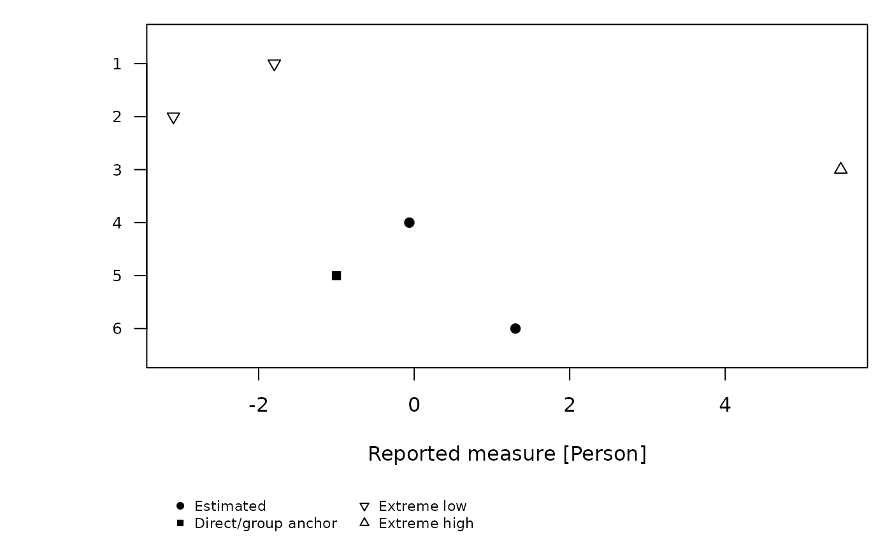
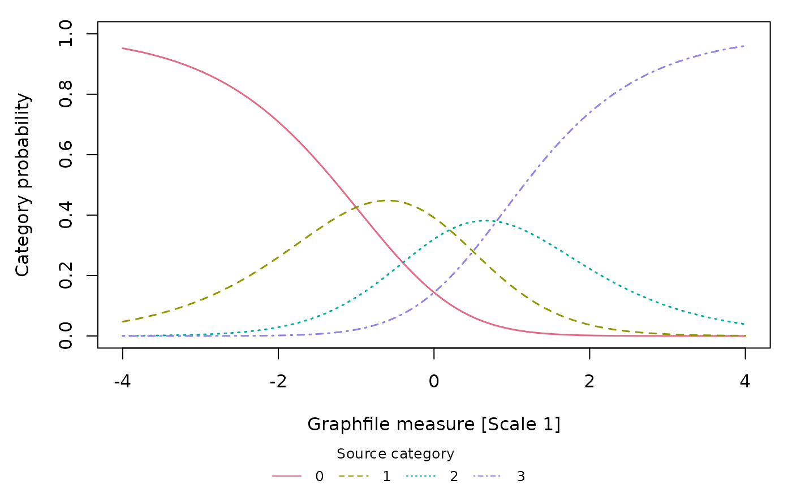

Plot imported FACETS measures, fit statistics and curves
Source:R/api-facets-results.R
plot.mfrm_facets_results.RdPlot imported FACETS measures, fit statistics and curves
Arguments
- x
Saved output of
read_facets_results().- type
"measure"for labelled element locations by facet;"wright"for points by facet on one measure axis;"fit"for measure versus mean square; or"infit_outfit"for Infit versus Outfit. Wright maps require the explicitcommon_scale = TRUEdeclaration at import."ccc"plots Graphfile category probabilities and"expected"plots Graphfile expected scores, each in separate scale panels.- facets
Optional character vector of facet names to display.
- statistic
"infit"or"outfit", used fortype = "fit".- draw
Logical; draw with base graphics when true.
- show_title, show_notes
Logical; show title/interpretation notes in the plot, off by default. Notes always remain in the returned data.
- show_legend
Logical; display the source-status symbol key or category curve key below the panels. Defaults to true.
- scales
Optional vector of Graphfile scale numbers for curve plots. Facet selectors do not apply to curves, and scale selectors do not apply to element plots.
- label_map
Optional data frame with character columns
Facet,ElementIDandDisplayLabelfor element plots. Keys must match exported IDs inx, including any leading zeros, and must be unique within a facet. A partial map is allowed; unmapped rows retain their source labels. Mapping is checked against the full result beforefacetsselection. This changes display labels only, not source labels or element identity. Curve plots do not accept this map. Onlytype = "measure"draws element labels; the other element plots retain them in returned plot data.- ...
Must be empty.
Value
Invisibly an mfrm_plot_data object. data$plot_data retains every
selected row with X, Y, Available and Reason; element plots also
have Symbol, and curves have Series, Color, LineType and Segment.
Unavailable
numerical coordinates are NA (measure plots retain label positions).
Original reported values/status remain in the same
rows. data$notes, data$sources and data$metadata describe interpretation
and origin. data$label_map retains a supplied display map. Filtering and
display labels do not change the saved results.
Details
Each measure panel has its own axis; the Wright display shares one measure
axis without centering, reversing signs or inventing category thresholds.
Filled circles denote estimated elements, squares direct/group anchor flags, downward/upward
triangles extreme low/high source status, diamonds single observations and
open circles unknown source status. The symbol key is in data$legend.
A square marks source Status 1; it does not identify an individually fixed
measure. Group-anchor members can vary around a fixed group mean, and
GroupRaw may instead be a reporting group. Check the original specification
or Table 7 to distinguish direct and group anchors. Returned notes retain
this limitation, also when plotting imports saved by an earlier version;
the source object is not changed. Recreate saved plot-data objects with
plot() to obtain the revised legend and notes.
Duplicate display labels are disambiguated by element key in measure plots.
Use label_map to display local names while retaining the original FACETS
labels and IDs. It cannot recover names lost in an export; supply the known
correspondence yourself. Character preservation and font rendering are
separate: choose an installed font with the required glyphs on the graphics
device. With Cairo support, grDevices::png() with type = "cairo" and
grDevices::cairo_pdf() accept a family such as "Meiryo" on Windows
when installed. Font availability differs across systems. The plot does not
install fonts or change global font settings.
Infit/Outfit reference lines at one describe the model reference, not a
fairness or acceptability cutoff. No confidence bars are calculated.
Extreme/single-observation fit placeholders and unmeasurable/no-data elements
are retained as unavailable. A plot can have no usable points; inspect its
row-level reasons. Unknown status is displayed explicitly, not certified.
Graphfile curves join consecutive exported coordinates with straight line
segments; this does not calculate new model predictions. Missing or invalid
rows break the lines. The legend identifies source category labels. Expected
scores and category labels retain their source coding. Each panel has its
own reported Measure axis, independent of element-plot scale declarations.
For curves, data$data holds the raw Graphfile table, data$plot_data the
selected long rows, and data$diagnostics the probability-sum checks.
Examples
path <- system.file("extdata", "facets-example", package = "mfrmr")
result <- read_facets_results(path,
facet_map = c("Person", "Rater", "Task"), source_version = "4.5.0")
plot(result, type = "measure", facets = "Person")

p <- plot(result, type = "infit_outfit", facets = "Rater", draw = FALSE)
p$data$plot_data[, c("Label", "X", "Y", "Available", "Reason")]
#> Label X Y Available Reason
#> 7 1 1.34 1.65 TRUE available
#> 8 2 1.11 1.14 TRUE available
p$data$notes
#> Type
#> 1 source
#> 2 scale
#> 3 uncertainty
#> 4 availability
#> 5 anchor_status
#> Text
#> 1 Reported FACETS results; no model was fitted or validated by this import.
#> 2 Source units, origins and signs are preserved; larger values do not automatically mean better performance.
#> 3 Points only. Source marginal SEs do not supply joint covariance or calibration-inclusive intervals.
#> 4 Unavailable and extreme rows remain in the table. Extreme fit values can be placeholders; unknown status is not evidence of adequacy.
#> 5 Status 1 (SourceStatus = anchored) flags direct or group anchoring; the individual measure need not be fixed. GroupRaw, imported group size and reported SE do not identify the anchor subtype. Extreme group members can instead carry Status -2/-3; AnchorFlagged does not count every member of an anchored group. Their reported locations do not identify an extreme-score adjustment rule. Check the original Labels= specification for the anchor mode and Table 7 for row annotations; G alone need not distinguish G/X input.
# Display names are joined by facet and exported ID, never by row order.
labels <- data.frame(Facet = "Person", ElementID = c("1", "2"),
DisplayLabel = c("Participant A", "Participant B"))
labelled <- plot(result, facets = "Person", label_map = labels, draw = FALSE)
labelled$data$plot_data[, c("ElementID", "Label", "DisplayLabel")]
#> ElementID Label DisplayLabel
#> 1 1 1 Participant A
#> 2 2 2 Participant B
#> 3 3 3 3
#> 4 4 4 4
#> 5 5 5 5
#> 6 6 6 6
# A separate synthetic PCM analysis, with four exported scale curves.
graph_path <- system.file("extdata", "facets-graph-example", "graph.txt",
package = "mfrmr")
curves <- read_facets_results(graph_file = graph_path, source_version = "4.5.0")
summary(curves, component = "curves")
#> Scale GridRows Categories ExpectedAvailable ProbabilityAvailable
#> 1 1 1001 4 1001 4004
#> 2 2 1001 4 1001 4004
#> 3 3 1001 4 1001 4004
#> 4 4 1001 4 1001 4004
#> ProbabilityCheckIssues
#> 1 0
#> 2 0
#> 3 0
#> 4 0
plot(curves, type = "ccc", scales = 1)

expected <- plot_data(curves, "plot_data", type = "expected", scales = 1)
head(expected[, c("Scale", "Measure", "Value", "Available")])
#> Scale Measure Value Available
#> 1 1 -4.000 0.0488 TRUE
#> 2 1 -3.992 0.0492 TRUE
#> 3 1 -3.984 0.0496 TRUE
#> 4 1 -3.976 0.0500 TRUE
#> 5 1 -3.968 0.0504 TRUE
#> 6 1 -3.960 0.0508 TRUE